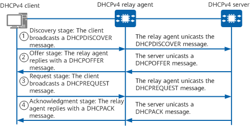

Only a DHCPv4 server on the same network segment as a DHCPv4 client can receive DHCPDISCOVER messages broadcast by the client. If a DHCPv4 client and server are on different network segments, a DHCPv4 relay agent must be deployed to forward DHCPv4 messages between them.
The working principles for a DHCPv4 client to access the network for the first time when a DHCPv4 relay agent exists are the same as those when no DHCPv4 relay agent exists. The difference is that the DHCPv4 relay agent forwards DHCPv4 messages between the DHCPv4 server and client. The following describes the working principles of the DHCPv4 relay agent.
Figure 1 shows the message exchange between the DHCPv4 client that accesses the network for the first time and the DHCPv4 server when the DHCPv4 relay agent is deployed.

Step 1: Discovery Stage
Checks whether the value of the hops field in the message is greater than 16. If so, the DHCPv4 relay agent discards the message. If not, the DHCPv4 relay agent increases the value by 1 and proceeds to the following operations.
Checks whether the value of the giaddr field in the message is 0. If so, the DHCPv4 relay agent sets the giaddr field to the IPv4 address of the interface that receives the DHCPDISCOVER message. If not, the DHCPv4 relay agent does not change the field and proceeds to the following operations.
Changes the destination IPv4 address of the DHCPDISCOVER message to the IPv4 address of the DHCPv4 server or next-hop relay agent, changes the source IPv4 address to the IPv4 address of the interface connecting the DHCPv4 relay agent to the client, and unicasts the message to the DHCPv4 server or next-hop relay agent.
If multiple DHCPv4 relay agents exist between the DHCPv4 client and server, each one processes the DHCPDISCOVER message using the same method.
Step 2: Offer Stage
After receiving the DHCPDISCOVER message, the DHCPv4 server selects an address pool on the same network segment as the address specified by the giaddr field in the message, allocates parameters such as an IPv4 address to the client, and unicasts a DHCPOFFER message to the DHCPv4 relay agent identified by the giaddr field.
Checks whether the value of the giaddr field in the message is the IPv4 address of the interface that receives the message. If so, the DHCPv4 relay agent proceeds to the following operations. If not, the DHCPv4 relay agent discards the message.
Step 3: Request Stage
If multiple DHCPv4 relay agents send DHCPOFFER messages to the DHCPv4 client, the client accepts only the first received DHCPOFFER message. The client then broadcasts a DHCPREQUEST message carrying the selected DHCPv4 server identifier (Option 54) and IPv4 address (Option 50, with the IPv4 address specified in the yiaddr field of the accepted DHCPOFFER message).
Step 4: Acknowledgement Stage
After receiving a DHCPREQUEST message from the DHCPv4 client, the DHCPv4 server replies with a DHCPACK message. After receiving the DHCPACK message from the server, the relay agent forwards the message to the DHCPv4 client.
Figure 2 shows how a DHCPv4 client renews its address lease through a DHCPv4 relay agent.
If no response is received when the lease expires, the DHCPv4 client stops using the current IPv4 address and sends a DHCPDISCOVER message to apply for a new one.
If a DHCPv4 client does not need to use the allocated IPv4 address before the lease expires, it sends a DHCPRELEASE message to the DHCPv4 relay agent, which then instructs the DHCPv4 server to release the IPv4 address. The DHCPv4 server saves the configuration of this DHCPv4 client and records the IPv4 address in the allocated IPv4 address list. The IPv4 address can then be allocated to this DHCPv4 client or other clients. A DHCPv4 client can send a DHCPINFORM message to the DHCPv4 server to request configuration update.